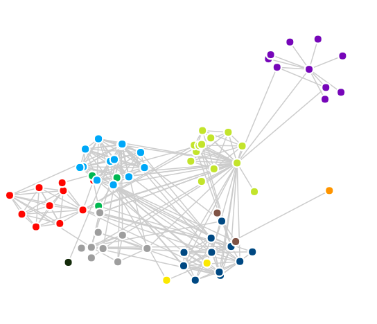

针对一些常见视图（比如树菜单、饼状图等）封装成对应的布局，布局只负责位置等信息的计算，具体的绘制方法通过布局提供的钩子函数实现。
可以传递任意格式的原始数据，只需要配置有效的根结点、子孩子和id获取方法即可；具体的绘制方法需要你通过配置drawer的画结点和连线方法来实现（使用canvas还是svg等是你的自由，这里只是给出计算结果）。
var tree = clay.layout.tree();
tree
//获取根结点方法
.bind('root', function (initTree) {
//返回根结点
})
//获取孩子方法
.bind('child', function (parentTree,initTree) {
//返回数据的孩子
})
//ID获取方法
.bind('id', function (treedata) {
//根据原始结点数据返回该数据的唯一标识;
})
//配置具体的绘结点和连线方法
.bind('drawer', function(nodes, rootid, size){
//根据选择的绘图方法或树结构（从左到右的树还是圆形树等），修改此处即可
//返回的nodes是标记了计算后位置的结点集合，具体看使用教程
});
// 初始化树
tree(/*原始数据*/);
所有的布局都一样，这里也是，配置canvas绘图方法就可以使用canvas绘图。
原始数据是根据根结点在左边的形式计算树的，如果希望绘制别的类型（比如根结点在顶部，或者结点在开始位置而不是在中心），可以在绘制的时候简单的处理一下，结点本身暴露的信息已经足够帮助你实现这些了。
除了上面的基本配置，还提供了实现交互树的接口：
tree.add(pid, newnodes, notUpdate)
添加新的结点，需要传递新结点挂载的父结点、新结点数据（可以是一堆结点，不过需要有一个根结点），是否更新（默认更新，也就是更新图形）
tree.delete(id, notUpdate)
删除已经存在的结点，传递需要删除的结点id即可，其子结点也会被删除。
tree.toggle(id, notUpdate, flag)
控制结点显示或隐藏，不会删除，flag可选，"show"：显示，"hidden"：隐藏，不传递就是切换。
tree.update()
由于有时候需要分开进行多次修改操作，因此可以设置不更新，在最后结束后手动调用更新。
力布局就是模拟一个物理环境，其中包含中心力（引力或斥力），结点间的排斥力和连接结点间的软木棒力。
当然，为了更好的效果，额外添加了比如阻尼衰减等特性，大致是下面的效果：

//获取力布局
var force = clay.layout.force();
// 配置
force.config({
center:26,//中心力强度
coulomb:400,//库仑力缩小倍数
spring:200,//软棒系数
});
force
// 分析数据方法
.bind('analyse', function (initnode) {
return [结点ID, 结点组名称];
}, function (initlink) {
return [源结点ID, 目标结点ID, 连线长度];
})
// 配置绘图方法
.bind('update', function (node) {
//画结点
}, function (source, target, link) {
//画连线
})
.bind('live', function () {
//每次绘制前预处理，可选
}, function () {
//每次绘制后预处理，可选
});
启动布局
force(nodes, links);
具体的绘制方法你可以选择你喜欢的方式，只需要修改对应的绘图方法即可。